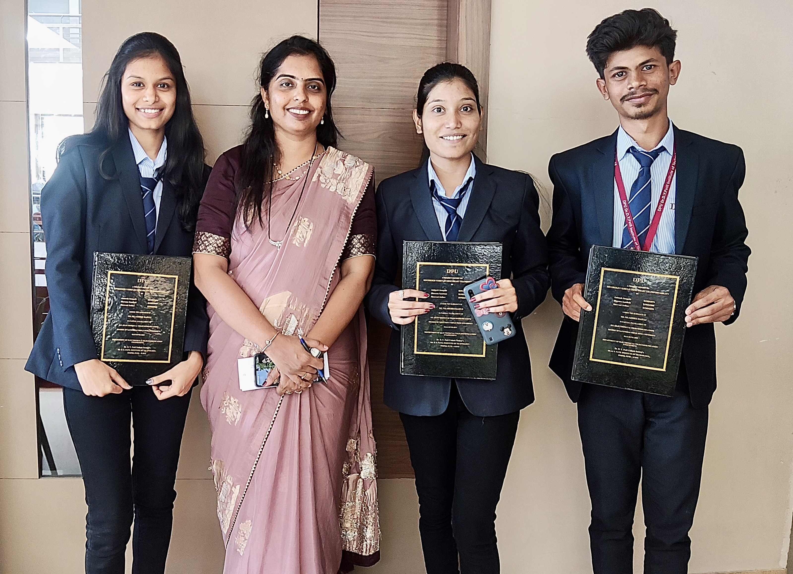
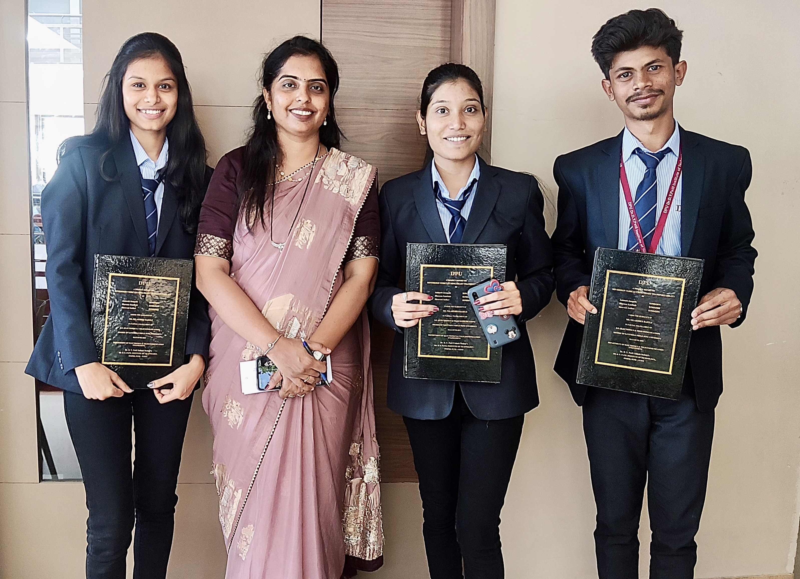

From opening up old remotes in Wardha to hiking the Rockies in Alberta –
this is how my journey shaped the engineer and person I am today.
Since my earliest years, I’ve been the kind of kid who took apart remote
controls and old radios just to see how they worked. That childhood
curiosity for electrical and computer components never left me — it only
grew stronger, shaping every academic and life decision I’ve made since.
My formal journey began in Maharashtra, India. In 2017 I passed Class 10
(CBSE) with Distinction (8.4/10), and in 2019 I completed Class 12
(Maharashtra State Board) with a focus on Information Technology. Driven
by a deep passion for technology and innovation, I joined the Electronics
and Telecommunication Engineering program at Dr. D. Y. Patil Institute of
Technology, Pimpri — an NAAC A-accredited institute permanently affiliated
with Savitribai Phule Pune University. Four intense and rewarding years
later, in June 2023, I graduated with First Class with Distinction and a
CGPA of 8.37.
Those undergraduate years were transformative. I designed motion-detecting
smart street lighting systems with gas-leak alerts, built autonomous vehicle
prototypes, and spent countless nights simulating circuits in Proteus and
MATLAB. Beyond the classroom, I led juniors as Assistant Digital Head of
Team TESA (the college technical club), organised national-level events like
Robo Wrestling and Avishkar as a Senior Technical Member of the IETE Club,
and earned certifications in AWS Cloud Technical Essentials, Data Analytics,
Machine Learning, and Six Sigma. Every project, workshop, and late-night
debugging session reinforced one truth: I love solving real-world problems
with hardware and software working together.
In 2023 I took the biggest leap of my life — I moved halfway across the
world to pursue a Master’s in Electrical and Computer Engineering at the
University of Calgary, Canada. Leaving behind family, friends, and the
familiar chaos of Pune roads wasn’t easy, but the moment I saw the
Canadian Rockies rising against the skyline, I knew I had made the right
choice.
Canada has given me more than an excellent education; it has given me a
completely new perspective. On weekends I trade laptops for hiking boots
and explore the trails of Banff, Kananaskis, and Jasper. I’ve stood
speechless at the turquoise waters of Lake Louise and Moraine Lake,
summited Ha Ling Peak and Tent Ridge, and have done more “unmanly”
(read: slightly terrifying but incredibly beautiful) solo hikes than I can
count. Every glacier, waterfall, and snowy peak reminds me how vast the
world is — and how much more there is to explore, both in nature and in
technology.
Today, as I work toward my graduate degree, I carry with me the rigor of an
Indian engineering education, the hands-on experience of leading technical
teams, and the quiet confidence that comes from standing on a mountain top
watching the sunrise over the Rockies.
I’m still the same kid who loved taking things apart — except now I’m
building smarter systems, writing better code, and dreaming bigger. Whether
it’s designing the next generation of intelligent electrical systems or
discovering the next hidden alpine lake, I’m just getting started.
“There’s a lot more of the world — and a lot more of the work — waiting for me.”
 
